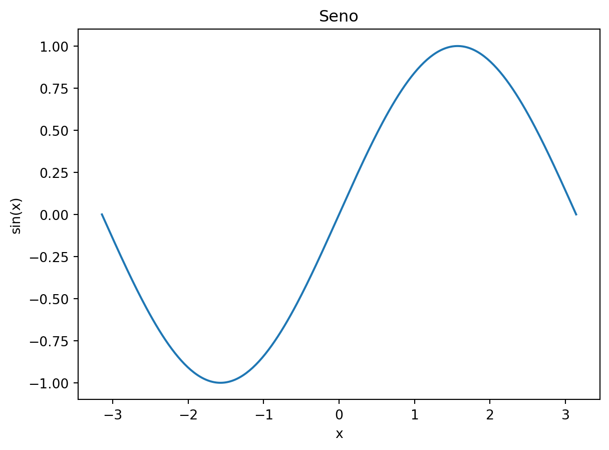

import numpy as np
import matplotlib.pyplot as plt
x = np.linspace(-np.pi, np.pi, 300)
plt.figure()
plt.plot(x, np.sin(x))
plt.xlabel("x"); plt.ylabel("sin(x)"); plt.title("Seno")
plt.show()

Este capítulo muestra cómo referenciar Figuras y Tablas (ver Figura 1.2 y Tabla 1.2).
import numpy as np
import matplotlib.pyplot as plt
x = np.linspace(-np.pi, np.pi, 300)
plt.figure()
plt.plot(x, np.sin(x))
plt.xlabel("x"); plt.ylabel("sin(x)"); plt.title("Seno")
plt.show()| Operación | Ejemplo | Resultado |
|---|---|---|
| Suma | 21 + 3 |
24 |
| Potencia | 2 ** 3 |
08 |
import pandas as pd, numpy as np
pd.DataFrame({"x": range(1,6), "y": np.random.randn(5).round(2)})| x | y | |
|---|---|---|
| 0 | 1 | 0.86 |
| 1 | 2 | -2.63 |
| 2 | 3 | -0.23 |
| 3 | 4 | 0.06 |
| 4 | 5 | -1.14 |